Mihomura, Ibaraki: things to do, food and stays
Mihomura · Ibaraki
Mihomura
Highlighted on the Ibaraki map.

Stay
ビラ里山双林／民泊
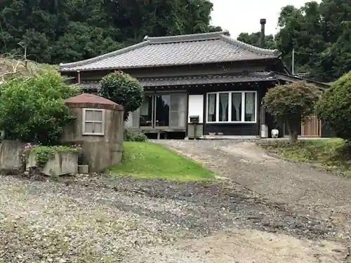
Bira Satoyama So Hayashi / Minpaku
Inn in Okitsu, Mihomura with a quiet countryside setting and ski access.
Dining
あたりや食堂
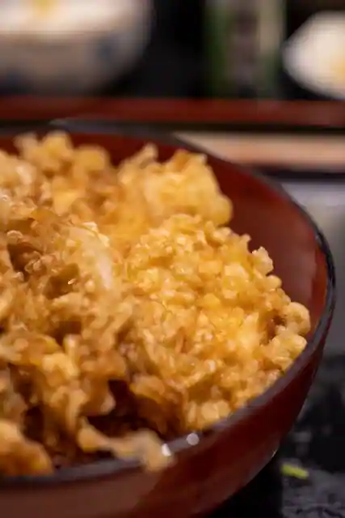
Atariya Shokudo
ニューかわぎし
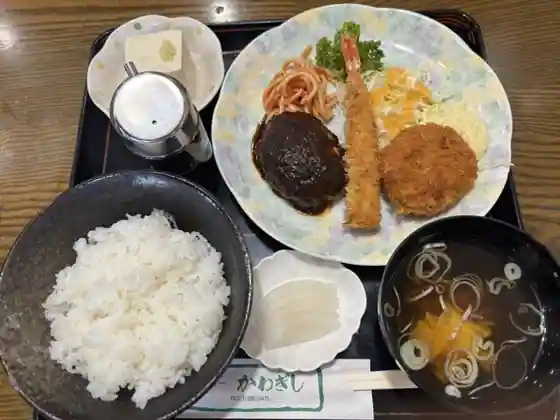
Nyu Kawagishi
美浦ゴルフ倶楽部
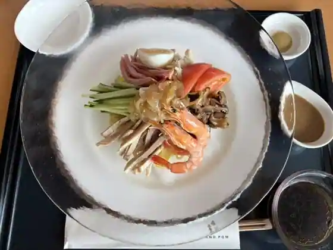
Mihoro Gorufu Kurabu
JRA美浦トレーニングセンター 厩務員食堂
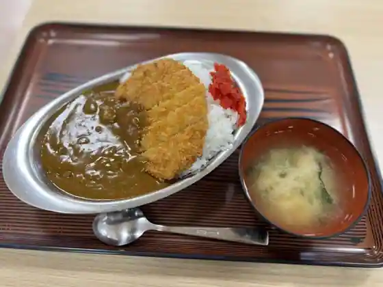
JRA Mihoro Toreningu Center Kyumuin Shokudo
いさ美庵
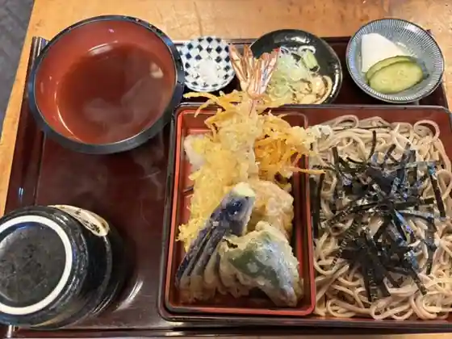
Isa Bi Iori
美浦村週末カフェ
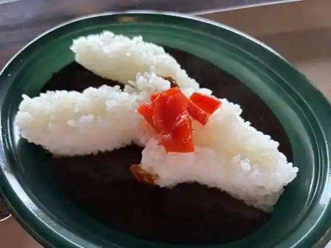
Mihoro Mura Shumatsu Cafe
おかだいらゴルフリンクス レストラン
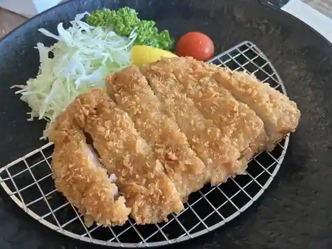
Okadaira Gorufurinkusu Restaurant
ステーキハウス ビクトリア
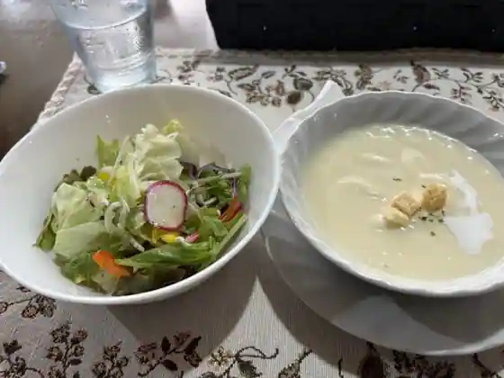
Steak House Bikutoria
古民家カフェ みんと
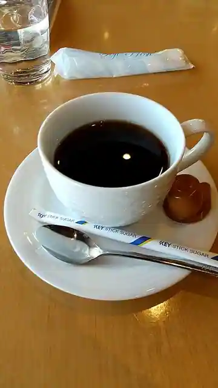
Ko Minka Cafe Minto
Ceylon spicy food
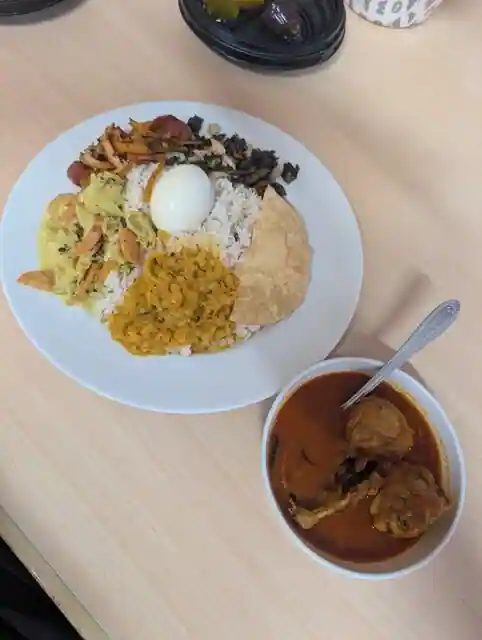
Ceylon spicy food
香月
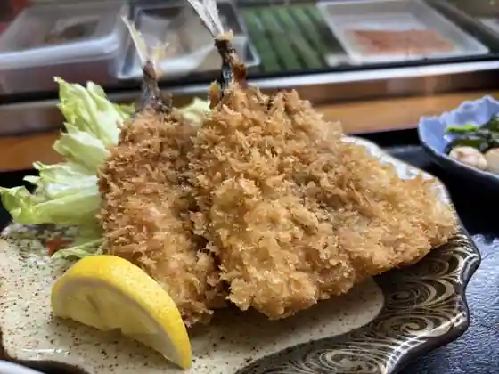
Kogetsu
王府
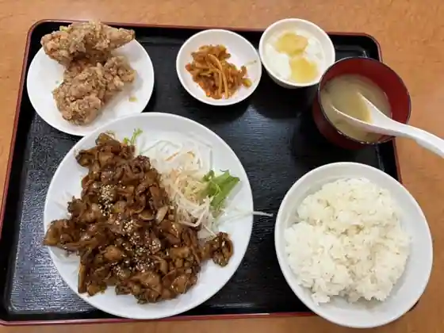
Ofu
ヌマザキ
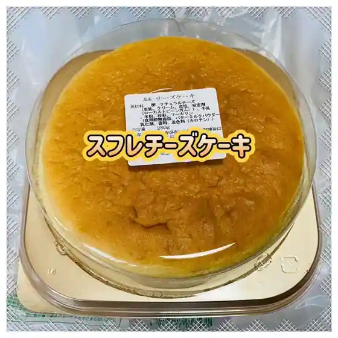
Numazaki
食工房 Just
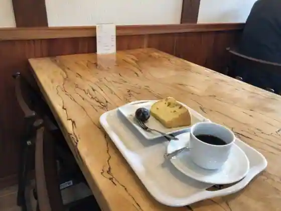
Shoku Kobo Just
カフェフサッコ
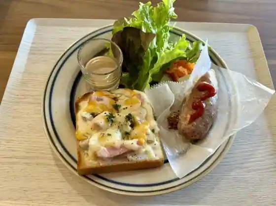
Cafe Fusakko
舟作
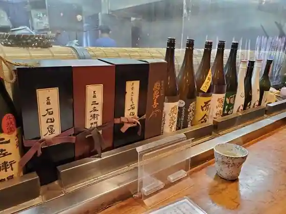
Fune Saku
PomP
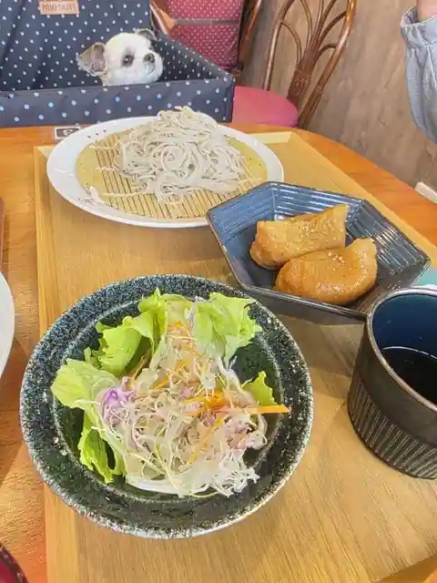
PomP
みほーすふぁーむカフェ
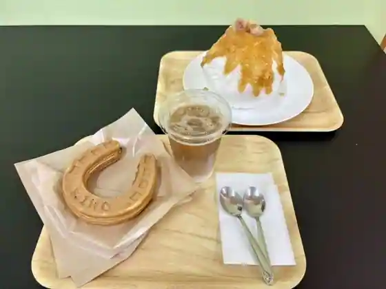
Mihosufamu Cafe
さかいや菓子店
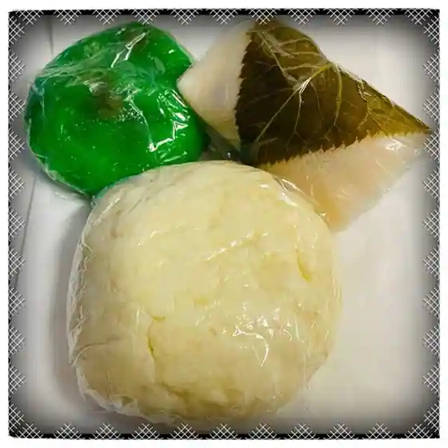
Sakaiya Kashi
クルア アンカナ
Kurua Ankana
やすべえ
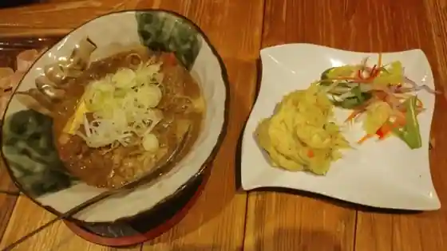
Yasube
パン工房エミーノ フードスクエア美浦店
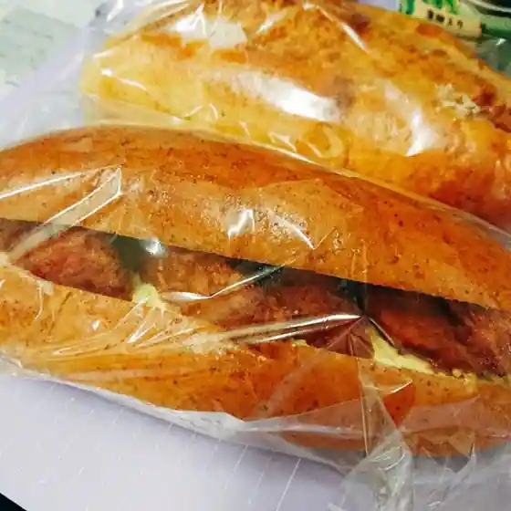
Bakery Kobo Emino Fudosukuea Mihoro
茅葺れすとらん 喫茶去
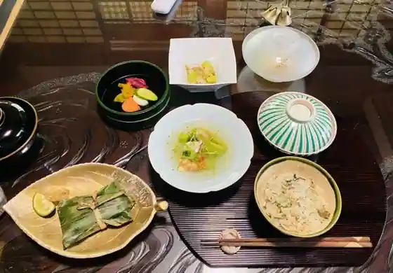
Kayabuki Restaurant Kissa Kyo
Sights
Riku Tairagai Tsuka Park

JRA Mihomura Toreningu Center

Hikato Kaze no Oka Park

Osuga Tsu Kohan no Village Park

Kihara Joshi Shiroyama Park
Mihomura Bunkazai Center
Atariya Shokudo
Mihofure Ai Plaza Chiiki Sanhin Chokubai Tokoro
Oyama Kohan Park (Kashima Kaigun Kokutai Ato)